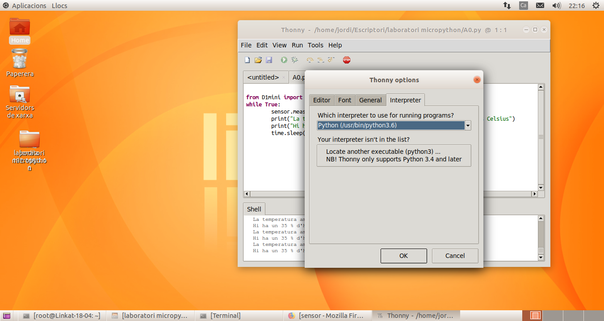

Nosaltres programarem amb el IDE (Entorn integrat de desenvolupament) Thonny
És important configurar correctament la versió de python que utilitzarem:
Ara ja podem treballar amb el nostre laboratori virtual. Amb la icona de la fletxa verda (Run) podrem executar els nostres programes, que editarem a la part superior de la finestra. A la capsa inferior (Shell) veurem els resultats de les ordres print o els errors que té el nostre programa.
Amb les noves versions de la Linkat, que porten una versió més moderna de Thonny (la 3.2.7 en la Linkat 20.04), si disposem del maquinari real D1 mini podrem fer servir els mateixos programes amb el mateix IDE (només caldra canviar la biblioteca D1mini per la que treballa amb el maquinari real en lloc del laboratori virtual):